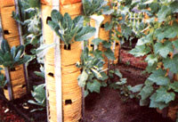

Seasons of the Garden
Help your yard kick that water-guzzling habit.
Summer heat and dry weather often add up to low water supplies. You may have already done a lot to minimize outdoor water use by mulching your flower and vegetable beds and installing drip irrigation around your shrubs and tree crops. But are you doing anything for your grassed areas? Lawns are frequently the biggest water guzzlers in home landscapes. Proper care can make a difference in how much water you need to keep grass green and healthy. Here're a few guidelines:
Frequent low mowing creates a dense grass canopy. Since little air flows around such short-cropped leaves, little water gets "wicked away" by wind. However, high-mowed grass has more extensive roots than low-cut blades, so it withstands drought better. Thus, a low-mowed lawn may use less water over a season than a high-mowed one, but it needs it more often. Lawn-care experts suggest a compromise: Mow the grass fre quently at a moderate height .
Don't overfertilize with nitrogen, or the leaves will grow too quickly and use more water. Too much N also restricts root development, further increasing watering needs. On the other hand, adding extra potassium and iron may enhance root growth and improve drought tolerance. In fact, adding iron can make a low-N lawn look as green as a high-N one.
Last, if you're starting a new lawn, check with your local garden supply store or extension agent. Several new grass cultivars have lower water needs than most common varieties.
Research Briefs
Low-nitrate carrots. Russian trials show that carrots grown in high-nitrogen soil have high concentrations of nitrates (which are potential carcinogens)-unless the soil is also high in phosphorus and potassium. So for your and your carrots' best health, give them a balanced (fertilizer) diet.
Grow up. MOTHER-reader Woodie Owen recently saw the University of Mexico's new idea for helping people with little land grow crops: large crop-growing tubes. Each six-foot-high and -round cylinder is made from heavy plastic sheeting and filled with soil. Then holes are cut out of the sides and transplants set in. Seven of these wood-braced tubes fit under one hexagonal plastic roof.
Preventing beetles . . . University of Kentucky entomologists found that just the scent of a few Japanese beetles feeding on a plant can attract more of the pests. So handpick the advance guard (in the morning, when the beetles are sluggish), shake those first comers off, or shield your plants with a floating row cover such as Reemay.
Dollar signs of the times. The new Boy Scout Agribusiness merit badge replaces the Food Systems and the Farm and Ranch Management badges. The patch's logo? A computer flanked by dollar signs! (A barn and gear appear in the background.)
Birds away! Japanese farmers reportedly use large balloons painted with several black-and-red bulls eyes to protect millions of acres of rice. North American trials show that six "Scare-Eye"- balloons per acre help protect cherries, blueberries, strawberries and corn from flocking birds like starlings, grackles, crows and pigeons. Scare-Eyes are available from Hartmann's Plantation, Inc., 310 60th St., P.O. Box E, Grand Junction, MI 49056.
Gleanings
Michael Maltas's 30-page Orchard Pest Management and Spray Schedule: Biodynamic, Organic, and Limited Synthetics Options ($6.60 postpaid from Ames Orchard & Nursery, 6 E. Elm, Fayetteville, AR 72701) is must reading for orchardists who want to avoid synthetic pesticides . . . . Recipes in The New York Botanical Garden Cookbook ($11.50 postpaid from New York Botanical Garden, Attn. Gift Shop, Bronx, NY 10458) emphasize fresh vegetables, fruits and herbs. The book is a welcome addition when everything is ripening at once . . . . If you're thinking about getting into the booming business of commercial herb production, first read the free USDA leaflet, "A Small-Scale Agricultural Alternative: Herbs" (Office for Small-Scale Agriculture, Cooperative State Research Service/Office of Grants and Program Systems, Room 6345, Hamilton Bldg., USDA, Washington, DC 20250 . . . . The nonprofit Vinifera Wine Growers Association provides free phone advice (call 703/754-8564) to back-yard and commercial growers of European wine grape cultivars. A one-year membership, which also includes a subscription to a quarterly journal, costs $17 from VWGA, Box P, The Plains, VA 22171.
Greg and Pat Williams raise most of their food on a small farm and publish HortIdeas, a fine newsletter on gardening research and products ($15 a year from G. & P. Williams, Rt. 1, Box 302, Gravel Switch, KY 40328).
|
 Crop tubes can mean big yields from small fields. |
|
|